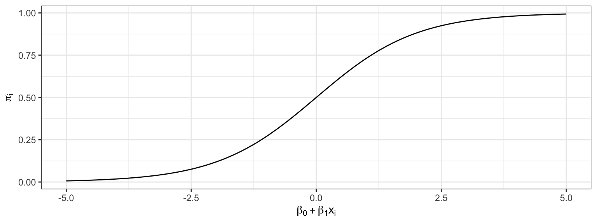

Conceptual Learning Outcomes
24. Calculate probabilities and odds using logistic regression.
25. Interpret logistic regression coefficients in context.
Computational Learning Outcomes
J. Perform logistic regression in R.
6.1 Logistic Regression
6.1.1 Modeling Binary Response
So far, we have modeled only quantitative response variables. The normal error regression model makes the assumption that the response variable is normally distributed, given the value(s) of the explanatory variables.
Now, we’ll look at how to model a categorical response variable. We’ll consider only situations where the response is binary (i.e. has 2 categories). Problems with categorical response variables are sometimes called classification problems, while problems with numeric response variables are sometimes called regression problems.
6.1.2 Credit Card Dataset
We’ll work with a dataset pertaining to 10,000 credit cards. The goal is to predict whether or not the user will default on the payment, using information on the credit card balance, user’s annual income, and whether or not the user is a student. Data come from Introduction to Statistical Learning by James, Witten, Hastie, Tibshirani.
library(ISLR)data(Default)summary(Default)
default student balance income
No :9667 No :7056 Min. : 0.0 Min. : 772
Yes: 333 Yes:2944 1st Qu.: 481.7 1st Qu.:21340
Median : 823.6 Median :34553
Mean : 835.4 Mean :33517
3rd Qu.:1166.3 3rd Qu.:43808
Max. :2654.3 Max. :73554
Default and Balance
The plot displays each person’s credit card balance on the x-axis, and whether or not they defaulted (a 0 or 1) on the y-axis.
We see that defaults are rare when the balance is less than $1,000, and more common for balances above $2,000.
We’ll first try fitting a linear regression model to the data to try to estimate the probability of a person defaulting on a loan, using the size of their balance as the explanatory variable.
#convert default from yes/no to 0/1Default <- Default |>mutate(default =as.numeric(default=="Yes"))
It allows the estimated probability of of default to be negative. It also assumes a linear trend that doesn’t seem to fit the data very well.
A sigmoidal curve, like the one below, seems like a better model for default probabilities. This curve stays between 0 and 1, and its curved nature seems like a better fit for the data.
6.1.3 Logistic Regression Model
A logistic regression model uses a sigmoidal curve like the one we saw to model default probabilities, using balance as an explanatory variable.
The model makes use of the function
\[ f(x) = \frac{e^x}{1+x^x}, \]
whose graph is shown below. This function is called an inverse logit function.
Starting with our linear model \(E(Y_i) = \beta_0+\beta_1x_{i1}\), we need to transform \(\beta_0+\beta_1x_{i1}\) into the interval (0,1).
Let \(\pi_i = \frac{e^{\beta_0+\beta_1x_{i1} }}{1+e^{\beta_0+\beta_1x_{i1}}}\).
Then \(0 \leq \pi_i \leq 1\), and \(\pi_i\) represents an estimate of \(P(Y_i=1)\).
This function maps the values of \(\beta_0+\beta_1x_{i1}\) into the interval (0,1).

The logistic regression model assumes that:
\(Y_i \in \{0,1\}\)
\(E(Y_i) = P(Y_i=1) = \pi_i=\frac{e^{\beta_0+\beta_1x_{i1} + \ldots \beta_px_{ip}}}{1+e^{\beta_0+\beta_1x_{i1} + \ldots \beta_px_{ip}}}\) i.e. \(\beta_0+\beta_1x_{i1} + \ldots \beta_px_{ip}= \text{log}\left(\frac{\pi_i}{1-\pi_i}\right).\) (This is called the logit function and can be written \(\text{logit}(\pi_i)\).
Instead of assuming that the expected response is a linear function of the explanatory variables, we are assuming that it is a function of a linear function of the explanatory variables.
We fit the logistic curve to the credit card data.
To fit the logistic regression model in R, we use the function glm, instead of lm. The function is specified the same way as before, and we add family = binomial(link = "logit").
CCDefault_M <-glm(data=Default, default ~ balance, family =binomial(link ="logit"))summary(CCDefault_M)
Call:
glm(formula = default ~ balance, family = binomial(link = "logit"),
data = Default)
Coefficients:
Estimate Std. Error z value Pr(>|z|)
(Intercept) -10.6513306 0.3611574 -29.49 <0.0000000000000002 ***
balance 0.0054989 0.0002204 24.95 <0.0000000000000002 ***
---
Signif. codes: 0 '***' 0.001 '**' 0.01 '*' 0.05 '.' 0.1 ' ' 1
(Dispersion parameter for binomial family taken to be 1)
Null deviance: 2920.6 on 9999 degrees of freedom
Residual deviance: 1596.5 on 9998 degrees of freedom
AIC: 1600.5
Number of Fisher Scoring iterations: 8
Recall that for a quantitative response variable, the values of \(b_1, b_2, \ldots, b_p\) are chosen in a way that minimizes \(\displaystyle\sum_{i=1}^n \left(y_i-(\beta_0+\beta_1x_{i1}+\ldots+\beta_px_{ip})^2\right)\). Least squares does not work well in this generalized setting. Instead, the b’s are calculated using a more advanced technique, known as maximum likelihood estimation. We won’t say anything more about that topic here, but it is a prominent technique, widely used in statistic modeling. It is explored in more detail in advanced statistics courses, such as STAT 445:Mathematical Statistics.
6.1.4 Odds and Odds Ratio
For an event with probability \(p\), the odds of the event occurring are \(\frac{p}{1-p}\).
Examples: 1. The odds of a fair coin landing heads are \(\frac{0.5}{1-0.5}=1\), sometimes written 1:1.
The odds of a fair 6-sided die landing on a 1 are \(\frac{1/6}{1-1/6}=\frac{1}{5}\), sometimes written 1:5.
In the credit card example, the odds of default are:
For a $1,000 balance - odds of default are \(\frac{0.00575}{1-0.00575} \approx 1:173.\)
For a $1,500 balance - odds of default are \(\frac{0.0829}{1-0.0829 } \approx 1:11.\)
For a $2,000 balance - odds of default are \(\frac{0.586}{1-0.586} \approx 1.414:1.\)
The quantity \(\frac{\frac{\pi_i}{1-\pi_i}}{\frac{\pi_j}{1-\pi_j}}\) is called the odds ratio and represents the odds ratio of a default for user \(i\), compared to user \(j\).
Example:
The default odds ratio for a $1,000 payment, compared to a $2,000 payment is
The odds ratio is \(\frac{\frac{1}{173}}{\frac{1.414}{1}}\approx 1:244.\)
The odds of a default are about 244 times larger for a $2,000 payment than a $1,000 payment.
6.1.5 Interpretation and of \(\beta_1\)
Consider the odds ratio for a case \(j\) with explanatory variable \(x + 1\), compared to case \(i\) with explanatory variable \(x\).
That is \(\text{log}\left(\frac{\pi_i}{1-\pi_i}\right) = \beta_0+\beta_1x\), and \(\text{log}\left(\frac{\pi_j}{1-\pi_j}\right) = \beta_0+\beta_1(x+1)\).
For every 1-unit increase in \(x\) we expect the log odds of “success” to multiply by a factor of \(\beta_1\).
For every 1-unit increase in \(x\) we expect the odds of “success” to multiply by a factor of \(e^{\beta_1}\).
Interpretation in Credit Card Example
\(b_1=0.0055\)
For each 1-dollar increase in balance on the credit card., the odds of default are estimated to multiply by \(e^{0.0055}\approx1.0055\).
That is, for each additional dollar on the card balance, the odds of default are estimated to increase by 0.55%
For each increase of \(d\) dollars in credit card balance, odds of default are estimated to multiply by a factor of \(e^{0.0055d}\).
For every $1,000 increase in balance, the odds of default are expected to multiply by a factor of \(e^{0.0055\times 1000}\approx 244\).
Thus, the odds of default for a balance of $2,000 are estimated to be \(e^{0.0055\times 1000}\approx 244\) times as great as the odds of default for a $1,000 balance. This matches our result when we actually calculated out the probabilities and odds.
Hypothesis test for\(\beta_1=0\)
The p-value on the “balance” line of the regression output is associated with the null hypothesis \(\beta_1=0\), that is that there is no relationship between balance and the odds of defaulting on the payment.
The fact that the p-value is so small tells us that there is strong evidence of a relationship between balance and odds of default.
We are 95% confident that for each 1 dollar increase in credit card balance, the odds of default are expected to multiply by a factor between \(e^{0.00508}\approx 1.0051\) and \(e^{0.00594}\approx 1.0060\).
This is a profile-likelihood interval, which you can read more about here.
6.2 Multiple Logistic Regression
6.2.1 Logistic Regression Models with Multiple Explanatory Variables
We can also perform logistic regression in situations where there are multiple explanatory variables. We’ll estimate probability of default, using both balance and whether or not the person is a student (a categorical variable) as explanatory variables.
CCDefault_M2 <-glm(data=Default, default ~ balance + student, family =binomial(link ="logit"))summary(CCDefault_M2)
Call:
glm(formula = default ~ balance + student, family = binomial(link = "logit"),
data = Default)
Coefficients:
Estimate Std. Error z value Pr(>|z|)
(Intercept) -10.7494959 0.3691914 -29.116 < 0.0000000000000002 ***
balance 0.0057381 0.0002318 24.750 < 0.0000000000000002 ***
studentYes -0.7148776 0.1475190 -4.846 0.00000126 ***
---
Signif. codes: 0 '***' 0.001 '**' 0.01 '*' 0.05 '.' 0.1 ' ' 1
(Dispersion parameter for binomial family taken to be 1)
Null deviance: 2920.6 on 9999 degrees of freedom
Residual deviance: 1571.7 on 9997 degrees of freedom
AIC: 1577.7
Number of Fisher Scoring iterations: 8
The following graph gives an illustration of the model.
For each 1 dollar increase in balance, the odds of default are estimated to multiply by a factor \(e^{0.0057}\approx 1.00575\), assuming whether or not the person is a student is held constant. Thus, the estimated odds of default increase by about 0.5%, for each 1-dollar increase in balance..
For every $100 increase in balance, the odds of default are estimated to multiply by \(e^{0.0057\times100}\approx 1.775\), assuming whether or not the person is a student is held constant. Thus, the estimated odds of default increase by about 77.5%.
The odds of default for students are estimated to be \(e^{-0.71} \approx 0.49\) as high for students as non-students, assuming balance amount is held constant.
Hypothesis Tests in Multiple Logistic Regression Model
Since the p-value associated with balance is very small, there is strong evidence of a relationship between balance and odds of default, after accounting for whether or not the person is a student.
Since the p-value associated with StudentYes is very small, there is strong evidence that students are less likely to default than nonstudents, provided the balance on the card is the same.
6.2.2 Multiple Logistic Regression Model with Interaction
The previous model assumes the effect of balance on default probability is the same for students as for nonstudents. If we suspect that the effect of having a larger balance might be different for students than for nonstudents, then we could use a model with interaction between the balance and student variables.
CCDefault_M_Int <-glm(data=Default, default ~ balance * student, family =binomial(link ="logit"))summary(CCDefault_M_Int)
Call:
glm(formula = default ~ balance * student, family = binomial(link = "logit"),
data = Default)
Coefficients:
Estimate Std. Error z value Pr(>|z|)
(Intercept) -10.8746818 0.4639679 -23.438 <0.0000000000000002 ***
balance 0.0058188 0.0002937 19.812 <0.0000000000000002 ***
studentYes -0.3512310 0.8037333 -0.437 0.662
balance:studentYes -0.0002196 0.0004781 -0.459 0.646
---
Signif. codes: 0 '***' 0.001 '**' 0.01 '*' 0.05 '.' 0.1 ' ' 1
(Dispersion parameter for binomial family taken to be 1)
Null deviance: 2920.6 on 9999 degrees of freedom
Residual deviance: 1571.5 on 9996 degrees of freedom
AIC: 1579.5
Number of Fisher Scoring iterations: 8
Interpretations for Logistic Model with Interaction
Assuming a person is a student, for every $100 increase in balance, the odds of default are expected to multiply by a factor of \(e^{0.0056\times 100}=1.75\), a 75% increase.
Assuming a person is a student, for every $100 increase in balance, the odds of default are expected to multiply by a factor of \(e^{0.0058\times 100}=1.786\), a 78.6% increase.
Since estimate of the interaction effect is so small and the p-value on this estimate is large, it is plausible that there is no interaction at all. Thus, the simpler non-interaction model is preferable.
6.2.3 Logistic Regression Key Points
\(Y\) is a binary response variable.
\(\pi_i\) is a function of explanatory variables \(x_{i1}, \ldots x_{ip}\).
For quantitative \(x_j\), when all other explanatory variables are held constant, the odds of “success” multiply be a factor of \(e^{\beta_j}\) for each 1 unit increase in \(x_j\)
For categorical \(x_j\), when all other explanatory variables are held constant, the odds of “success” are \(e^{\beta_j}\) times higher for category \(j\) than for the “baseline category.”
For models with interaction, we can only interpret \(\beta_j\) when the values of all other explanatory variables are given (since the effect of \(x_j\) depends on the other variables.)
6.3 Practice Questions
1)
In which of the following situations would it be appropriate to use a logistic regression model? Choose all that apply.
A. We want to predict whether or not it will rain on a given day, using information on temperature, wind speed, and amount of cloud cover.
B. We want to predict the number of hours a person will sleep in a given night, based on whether or not they take medication designed to improve sleep quality.
C. We want to predict whether the incumbent party will win an election, using information on unemployment and inflation rates, and stock market growth.
D. We want to predict whether a person will use the term “Pop” or “Soda” based on which state they grew up in.
E. We want to predict whether or not a person will get into a college, using information including their high school GPA, standardized test scores, and whether or not they participated in certain activities.
F. We want to predict the number of people crossing a street in a given hour, using information about the time of the day, the day of the week, and the temperature.
G. We want to predict whether or not a sports team will win a game, using information on the number of games they’ve won and lost previously, as well as the number of games their opponent has won and lost previously, as well as the strength of opponents that they and their opponent have played against in prior games.
2)
We’ll work with a dataset on admissions to graduate school. We have data on a student’s graduate records exam (GRE) test score out of 800, and whether or not they attended a top-tier undergraduate college. Data are from (https://stats.idre.ucla.edu/stat/data/binary.csv). The response variable is whether or not the student was admitted to the graduate program (1=Yes, 0=No).
The dataset contains the following variables.
gre - score on the GRE exam TopTier - whether or not the student attended a top tier undergraduate institution admit - whether or not the student was admitted to the program (1=yes, 0=no)
A graph showing whether or not a person was admitted to graduate school along with their gre score and whether or not they attended a top tier undergraduate college is shown below. The curves estimating admission probability using logistic regression are also shown.
We fit a logistic regression model with admit as the response variable and gre and TopTier as explanatory variables.
R output for the model is shown below.
M_Grad_admit_gre_top <-glm(data=Grad, admit ~ gre + TopTier, family =binomial(link ="logit"))summary(M_Grad_admit_gre_top)
Call:
glm(formula = admit ~ gre + TopTier, family = binomial(link = "logit"),
data = Grad)
Coefficients:
Estimate Std. Error z value Pr(>|z|)
(Intercept) -2.960822 0.617269 -4.797 0.00000161 ***
gre 0.003377 0.001004 3.363 0.000770 ***
TopTierTRUE 1.065127 0.289486 3.679 0.000234 ***
---
Signif. codes: 0 '***' 0.001 '**' 0.01 '*' 0.05 '.' 0.1 ' ' 1
(Dispersion parameter for binomial family taken to be 1)
Null deviance: 499.98 on 399 degrees of freedom
Residual deviance: 472.56 on 397 degrees of freedom
AIC: 478.56
Number of Fisher Scoring iterations: 4
Exponentiated regression coefficients are shown below.
exp(M_Grad_admit_gre_top$coefficients)
(Intercept) gre TopTierTRUE
0.05177633 1.00338305 2.90120814
a)
Give interpretations of each of the three numbers in the Estimate column of the coefficient table, in context. Give your answer in rounded numeric form. (i.e. don’t put \(e^\#\).)
b)
Write a sentence interpreting the confidence intervals on the “gre” and “HighlyRankedTRUE” lines in context. Give answers in rounded numeric form. (i.e. don’t put \(e^\#\).)
Do the data provide evidence that higher GRE scores are associated with increased chance of being admitted to graduate school, for students attending similar institutions? Cite a p-value to support your answer.
d)
Do the data provide evidence that attending a highly ranked institution improves the chances for graduate school admission for students of the same GRE score?
3)
Continue with the R output from Question 2.
a)
Estimate the admission probability of a student who attended a top-tier institution and had a GRE score of 575. Give your answer as a probability in rounded numeric form. (i.e. don’t put \(e^\#\).)
b)
Estimate the admission probability of a student who did not attend a top-tier institution and had a GRE score of 650. Give your answer as a probability in rounded numeric form. (i.e. don’t put \(e^\#\).)
c)
If two students attend the same institution, and one scores 50 points higher on the GRE, how many times greater are the odds of that student to be admitted to the graduate program, compared to the student with the lower GRE score? Give your answer in rounded numeric form. (i.e. don’t put \(e^\#\).)
d)
If two students achieve the same GRE score, and one attended a top-tier institution, while the other did not, how many times greater are the odds of the student who attended the highly ranked institution being accepted to grad school, compared with the one who did not? Give your answer in rounded numeric form. (i.e. don’t put \(e^\#\).)
e)
Suppose that, according to the above model, Student A is estimated to have a 25% chance of getting into the the graduate program. Student B goes to the same school and scores 55 points higher on the GRE. Approximately, what is the estimated probability of student B getting into the graduate program?
Hint: The following calculation may be helpful.
exp(0.003377*55)
[1] 1.204103
4)
Now, consider the logistic regression model resulting from the following R command.
M_Grad_admit_gre_top_int <-glm(data=Grad, admit ~ gre * TopTier, family =binomial(link ="logit"))summary(M_Grad_admit_gre_top_int)
Call:
glm(formula = admit ~ gre * TopTier, family = binomial(link = "logit"),
data = Grad)
Coefficients:
Estimate Std. Error z value Pr(>|z|)
(Intercept) -2.8825292 0.6839726 -4.214 0.000025 ***
gre 0.0032473 0.0011183 2.904 0.00369 **
TopTierTRUE 0.6630025 1.5695442 0.422 0.67272
gre:TopTierTRUE 0.0006627 0.0025429 0.261 0.79439
---
Signif. codes: 0 '***' 0.001 '**' 0.01 '*' 0.05 '.' 0.1 ' ' 1
(Dispersion parameter for binomial family taken to be 1)
Null deviance: 499.98 on 399 degrees of freedom
Residual deviance: 472.49 on 396 degrees of freedom
AIC: 480.49
Number of Fisher Scoring iterations: 4
a)
Explain, in context, how this model is different than the one in Questions 2 and 3. (Don’t just say that it contains an interaction, but rather, explain what that means in context.)
b)
Do the data provide evidence that gre score affects the probability of successful grad school admission differently for students at top tier schools than at other schools? Justify your answer.
c)
Which model should we use (this one or the one in Question 2) to make inferences? Explain your answer.